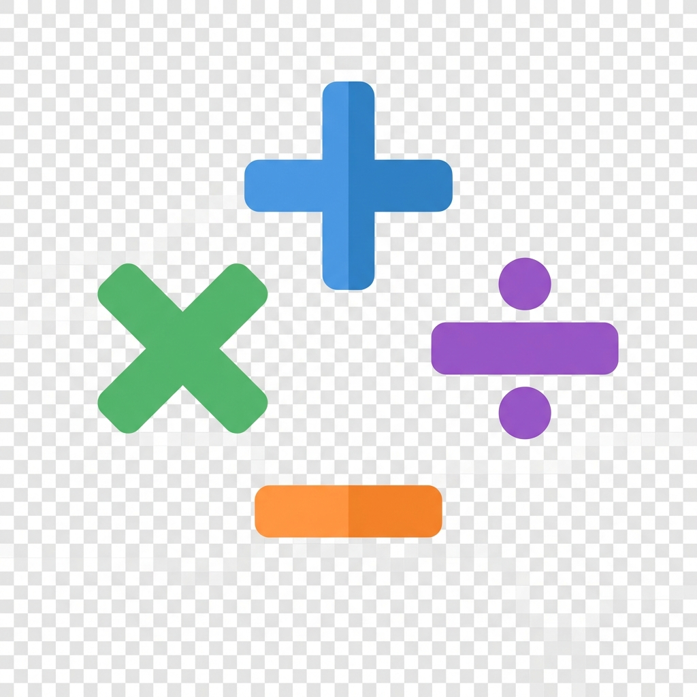
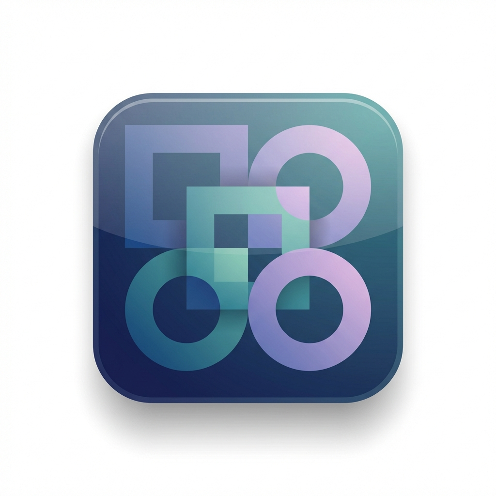
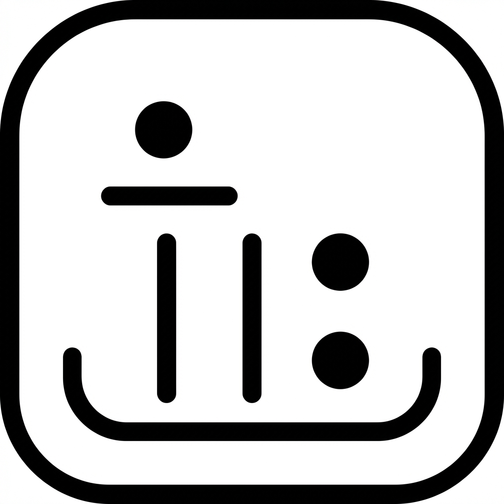

요청 스타일: 사칙연산 드러내는 스타일 / 모던한 스타일 / 심플한 스타일

public/fav-new/favicon-arith-new.png

public/fav-new/favicon-modern-new.png

public/fav-new/favicon-simple-new.png
현재 브라우저에서 확인: http://localhost:3200/favicon-gallery.html
원하면 내가 지금 바로 하나 골라 public/favicon.svg 대신 기본 파비콘으로 교체할게.